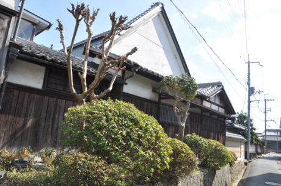
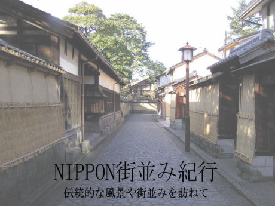
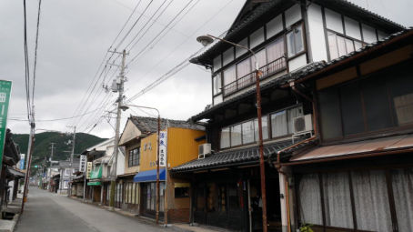
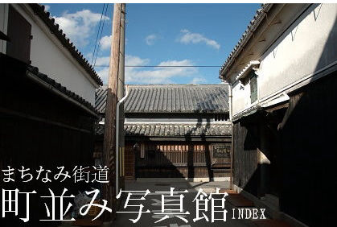
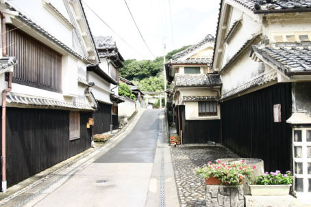

Four dogs and a horse
Townscapes - Japan
Townscapes - Norway
Townscapes - Sweden
Folk art
Research
Links

日本の古い町並み ~ いにしえの面影を求める日本再発見の旅
-
古い町並み
-
一路一会 ~ 古い町並みと集落
-

NIPPON街並み紀行
-
街道歩き旅－五街道を中心に少しずつ一人で歩いている記録
-
重要伝統的建造物群保存地区
-

郷愁小路－古い町並と懐かしい風景－
-
歩く東海道５３次
-
JAPAN WEB MAGAZINE ~ 日本の古い町並み
-

まちなみ街道 町並み写真館
-

古い建物と街並みをもとめて
-
日常旅行日記 ~ まちの近代を探訪中
-
Made
with Mobirise css templates